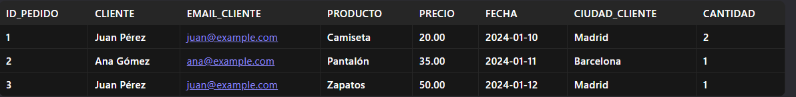
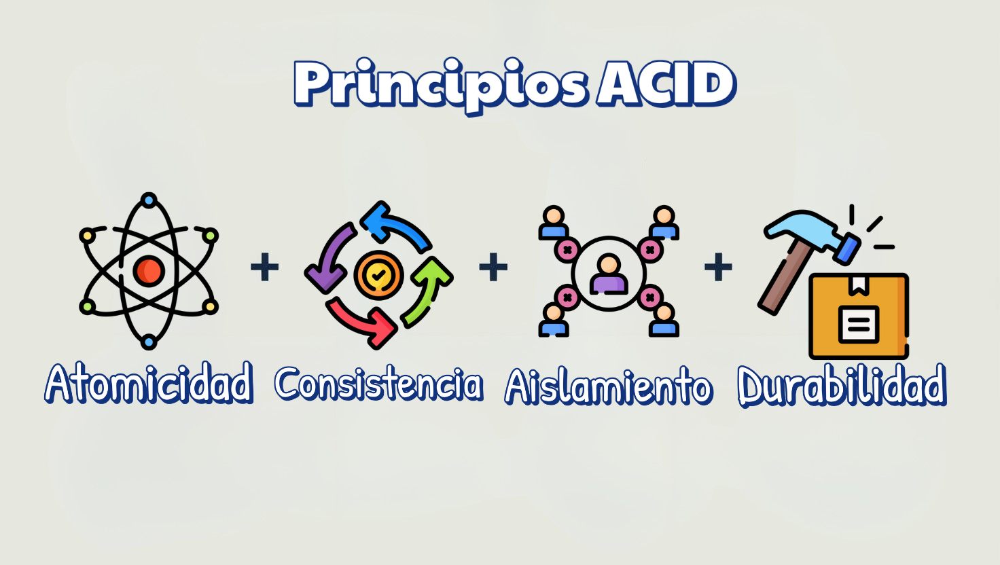

Conceptos de Base de Datos Relacional
Al utilizar Supabase —que se basa en PostgreSQL—, es fundamental comprender y aplicar varios conceptos clásicos de bases de datos relacionales para garantizar la eficiencia, integridad y escalabilidad de las aplicaciones. A continuación se detallan algunos de los conceptos clave a considerar:
Modelo Relacional y Normalización 📊⚙️
Organizar los datos en tablas relacionadas y aplicar técnicas de normalización (por ejemplo, hasta la tercera forma normal) ayuda a minimizar la redundancia y mantener la coherencia de los datos. La correcta estructura relacional facilita consultas más sencillas y evita inconsistencias [14].
➡️ Ejemplo
Datos No Normalizados (Tabla Inicial)
Supongamos una tabla pedidos que almacena información de ventas:

➡️ Problemas:
Redundancia: Datos del cliente (email, ciudad) se repiten en múltiples pedidos.
Anomalías: Si Juan Pérez cambia de ciudad, hay que actualizar múltiples registros.
Dependencias parciales/transitivas: El Precio depende del Producto, no del ID_Pedido.
1️⃣ Primera Forma Normal (1FN): Valores Atómicos
Requisito: Todas las columnas deben tener valores atómicos (sin listas ni datos compuestos).
En este caso, la tabla ya cumple 1FN porque cada celda tiene un solo valor.
2️⃣ Segunda Forma Normal (2FN): Eliminar Dependencias Parciales
Requisito: Todas las columnas no clave deben depender completamente de la clave primaria.
Problema:
🔹La clave primaria compuesta podría ser (ID_Pedido, Producto), pero:
🔸Precio depende solo de Producto.
🔸Cliente, Email_Cliente, y Ciudad_Cliente dependen solo de ID_Pedido.
Solución:
Dividir en tablas.
Tabla clientes
CREATE TABLE clientes (
id_cliente INT PRIMARY KEY AUTO_INCREMENT,
nombre VARCHAR(100),
email VARCHAR(100) UNIQUE,
ciudad VARCHAR(100)
);
Tabla productos
CREATE TABLE productos (
id_producto INT PRIMARY KEY AUTO_INCREMENT,
nombre VARCHAR(100),
precio DECIMAL(10, 2)
);
Tabla pedidos
CREATE TABLE pedidos (
id_pedido INT PRIMARY KEY AUTO_INCREMENT,
id_cliente INT,
fecha DATE,
FOREIGN KEY (id_cliente) REFERENCES clientes(id_cliente)
);
Tabla detalle_pedidos
CREATE TABLE detalle_pedidos (
id_pedido INT,
id_producto INT,
cantidad INT,
PRIMARY KEY (id_pedido, id_producto),
FOREIGN KEY (id_pedido) REFERENCES pedidos(id_pedido),
FOREIGN KEY (id_producto) REFERENCES productos(id_producto)
);
3️⃣ Tercera Forma Normal (3FN): Eliminar Dependencias Transitivas
Requisito: Eliminar atributos que dependan de otros atributos no clave.
Problema en clientes:
🔹Ciudad_Cliente depende de id_cliente, pero podría haber redundancia si muchos clientes comparten la misma ciudad.
Solución: Separar ciudades en una tabla independiente (opcional, pero útil para evitar duplicados):
Tabla ciudades
CREATE TABLE ciudades (
id_ciudad INT PRIMARY KEY AUTO_INCREMENT,
nombre VARCHAR(100) UNIQUE
);
Tabla clientes (actualizada)
CREATE TABLE clientes (
id_cliente INT PRIMARY KEY AUTO_INCREMENT,
nombre VARCHAR(100),
email VARCHAR(100) UNIQUE,
id_ciudad INT,
FOREIGN KEY (id_ciudad) REFERENCES ciudades(id_ciudad)
);
Estructura Final Normalizada (3FN)
1️⃣ clientes: Almacena datos únicos de clientes.
2️⃣ productos: Gestiona información de productos.
3️⃣ pedidos: Relaciona clientes con pedidos.
4️⃣ detalle_pedidos: Detalla productos por pedido.
5️⃣ ciudades: Evita duplicar nombres de ciudades.
➡️ Ejemplo de Inserción de Datos
-- Insertar ciudades
INSERT INTO ciudades (nombre) VALUES ('Madrid'), ('Barcelona');
-- Insertar clientes
INSERT INTO clientes (nombre, email, id_ciudad)
VALUES ('Juan Pérez', 'juan@example.com', 1),
('Ana Gómez', 'ana@example.com', 2);
-- Insertar productos
INSERT INTO productos (nombre, precio)
VALUES ('Camiseta', 20.00),
('Pantalón', 35.00),
('Zapatos', 50.00);
-- Insertar pedidos
INSERT INTO pedidos (id_cliente, fecha) VALUES (1, '2024-01-10'), (2, '2024-01-11'), (1, '2024-01-12');
-- Detalle de pedidos
INSERT INTO detalle_pedidos (id_pedido, id_producto, cantidad)
VALUES (1, 1, 2), -- Pedido 1: 2 camisetas
(2, 2, 1), -- Pedido 2: 1 pantalón
(3, 3, 1); -- Pedido 3: 1 zapato
Ventajas de la Normalización
🔹 Menos redundancia: Datos como email o precio no se repiten.
🔹 Integridad: Actualizar una ciudad en ciudades afecta a todos los clientes relacionados.
🔹 Consultas eficientes: JOINs sencillos entre tablas.
Ejemplo de consulta para obtener todos los pedidos de Juan Pérez:
SELECT p.id_pedido, pr.nombre AS producto, d.cantidad, pr.precio
FROM pedidos p
JOIN clientes c ON p.id_cliente = c.id_cliente
JOIN detalle_pedidos d ON p.id_pedido = d.id_pedido
JOIN productos pr ON d.id_producto = pr.id_producto
WHERE c.nombre = 'Juan Pérez';
Claves Primarias y Foráneas 🔑🔗
Las claves primarias identifican de forma única cada registro de una tabla, mientras que las claves foráneas establecen las relaciones entre tablas, permitiendo que la integridad referencial se mantenga en el sistema. Esto es crucial para garantizar que las relaciones entre los distintos conjuntos de datos sean válidas.
➡️ Ejemplo: Tabla de Usuarios
Supongamos una tabla llamada usuarios que almacena información de usuarios:
CREATE TABLE usuarios (
user_id INT PRIMARY KEY, -- Clave primaria
email VARCHAR(100) UNIQUE, -- Clave secundaria (candidata)
nombre VARCHAR(50),
telefono VARCHAR(15) UNIQUE -- Otra clave secundaria (candidata)
);
➡️ Ejemplo de uso:
-- Insertar un usuario (user_id es obligatorio y único)
INSERT INTO usuarios (user_id, email, nombre, telefono)
VALUES (1, 'juan@example.com', 'Juan', '123-456-789');
-- Esto fallaría (user_id duplicado):
INSERT INTO usuarios (user_id, email, nombre)
VALUES (1, 'maria@example.com', 'María');
-- Esto también fallaría (email duplicado):
INSERT INTO usuarios (user_id, email, nombre)
VALUES (2, 'juan@example.com', 'María');
Restricciones (Constraints) 🚫✋🏼
El uso de restricciones como UNIQUE, NOT NULL, CHECK y PRIMARY KEY es vital para asegurar la validez y precisión de los datos almacenados. Estas restricciones ayudan a prevenir la inserción de datos erróneos o inconsistentes.
Ejemplo de Restricciones en SQL
-- Crear una tabla de usuarios con restricciones
CREATE TABLE usuarios (
id_usuario INT PRIMARY KEY AUTO_INCREMENT, -- Clave primaria única y autoincremental
nombre VARCHAR(50) NOT NULL, -- No permite valores nulos
email VARCHAR(100) UNIQUE NOT NULL, -- Debe ser único y no nulo
edad INT CHECK (edad > 0), -- Edad debe ser mayor a 0
rol VARCHAR(20) DEFAULT 'usuario' -- Valor por defecto y restricción de valores
CHECK (rol IN ('admin', 'editor', 'usuario'))
);
Explicación de las restricciones:
1️⃣ PRIMARY KEY (id_usuario):
🔹Identifica cada registro de forma única.
🔹No permite valores duplicados ni NULL.
🔹Autoincremental: Genera un ID automáticamente al insertar un nuevo usuario.
2️⃣ NOT NULL (nombre, email):
🔹Obliga a que estos campos siempre tengan un valor .
🔹Ejemplo: No puedes insertar un usuario sin nombre o email.
3️⃣ UNIQUE (email):
🔹Asegura que no haya emails duplicados en la tabla.
🔹Si intentas registrar el mismo email dos veces, la base de datos lanzará un error.
4️⃣ CHECK (edad > 0):
🔹Valida que la edad sea un número positivo.
🔹Ejemplo: edad = -5 generaría un error.
5️⃣ CHECK + DEFAULT (rol):
🔹Define valores permitidos para rol (solo 'admin', 'editor' o 'usuario').
🔹Si no se especifica un rol, se asigna 'usuario' por defecto.
Integridad Referencial 🫱🏾🫲🏼🧩
Se debe asegurar mediante el uso de claves foráneas que los datos relacionados sean consistentes entre sí. Esto previene, por ejemplo, que se elimine un registro de una tabla padre cuando existen registros relacionados en una tabla hija, a menos que se establezca una acción en cascada.
➡️ Ejemplo: Clientes y Pedidos
Supongamos dos tablas: clientes (padre) y pedidos (hija).
La tabla pedidos tendrá una clave foránea que referencia a clientes.
1️⃣ Crear tabla clientes (padre):
CREATE TABLE clientes (
id_cliente INT PRIMARY KEY AUTO_INCREMENT,
nombre VARCHAR(50) NOT NULL
);
2️⃣ Crear tabla pedidos (hija) con clave foránea:
CREATE TABLE pedidos (
id_pedido INT PRIMARY KEY AUTO_INCREMENT,
descripcion VARCHAR(100),
id_cliente INT,
FOREIGN KEY (id_cliente)
REFERENCES clientes(id_cliente)
ON DELETE CASCADE -- Acción en cascada al eliminar
ON UPDATE CASCADE -- Acción en cascada al actualizar
);
Explicación de las acciones:
🔹FOREIGN KEY (id_cliente):
🔸La columna id_cliente en pedidos debe existir en la tabla clientes.
🔸Esto evita que se inserten pedidos con un id_cliente inválido.
🔹ON DELETE CASCADE:
🔸Si se elimina un cliente de la tabla clientes, todos sus pedidos se eliminan automáticamente.
🔸Esto mantiene la consistencia: no habrá pedidos "huérfanos".
🔹ON UPDATE CASCADE:
🔸Si se actualiza el id_cliente en la tabla clientes, los cambios se propagan automáticamente a la tabla pedidos.
➡️ Ejemplos de operaciones
Inserción válida:
-- Insertar un cliente
INSERT INTO clientes (nombre) VALUES ('Juan Pérez');
-- Insertar un pedido vinculado al cliente (id_cliente = 1)
INSERT INTO pedidos (descripcion, id_cliente)
VALUES ('Pedido de camiseta', 1); -- ¡Válido!
Inserción inválida (falla por integridad referencial):
-- Intentar insertar un pedido con id_cliente = 99 (no existe)
INSERT INTO pedidos (descripcion, id_cliente)
VALUES ('Pedido inválido', 99); -- Error: No se puede insertar.
Eliminación con cascada:
-- Eliminar al cliente con id_cliente = 1
DELETE FROM clientes WHERE id_cliente = 1;
-- Resultado:
-- - El cliente se elimina de `clientes`.
-- - Todos sus pedidos se eliminan automáticamente de `pedidos`.
Actualización con cascada:
-- Actualizar el id_cliente de Juan Pérez (de 1 a 100)
UPDATE clientes SET id_cliente = 100 WHERE id_cliente = 1;
-- Resultado:
-- - El cliente ahora tiene id_cliente = 100.
-- - Los pedidos asociados también actualizan su `id_cliente` a 100.
➡️ ¿Qué sucede sin integridad referencial?
Si no existiera la clave foránea:
🔹Podrías insertar pedidos con id_cliente inexistente.
🔹Al eliminar un cliente, sus pedidos quedarían "huérfanos" (inconsistentes).
Transacciones y Cumplimiento de las Propiedades ACID 🥇🥈
Las transacciones son un pilar fundamental en sistemas de bases de datos relacionales, ya que garantizan que operaciones complejas se ejecuten de manera confiable y segura , incluso en entornos con múltiples usuarios o procesos concurrentes. Las propiedades ACID (Atomicidad, Consistencia, Aislamiento y Durabilidad) son el marco que asegura esta confiabilidad.

➡️ ¿Por qué ACID es crucial en sistemas reales?
🔹Operaciones complejas:
En aplicaciones como banca, e-commerce o IoT, donde operaciones multietapa (ej: reservar un producto, descontar inventario, generar factura) deben ser indivisibles.
🔹Entornos concurrentes:
En sistemas con múltiples usuarios o dispositivos IoT actualizando datos simultáneamente, el aislamiento evita inconsistencias.
🔹Recuperación ante fallos:
La durabilidad garantiza que, incluso después de un desastre, los datos estén intactos y recuperables.
➡️ Consecuencias de Ignorar ACID
🔹Inconsistencia:
Datos corruptos o violaciones de reglas de negocio.
🔹Pérdida de datos:
Cambios no guardados tras un fallo.
🔹Condiciones de carrera:
Resultados impredecibles en sistemas concurrentes.
➡️ ACID en Tecnologías Modernas
Bases de datos relacionales (MySQL, PostgreSQL):
🔹Cumplen ACID por diseño.
Bases de datos NoSQL:
🔹Algunas (ej: MongoDB) ofrecen ACID parcial o en transacciones limitadas.
IoT y sistemas distribuidos:
🔹Herramientas como Supabase o CockroachDB implementan ACID para garantizar coherencia en datos distribuidos.
¡Las propiedades ACID son la base para construir sistemas robustos y confiables!
Índices 🔍🔖
La creación de índices sobre las columnas más consultadas mejora significativamente el rendimiento de las consultas, facilitando búsquedas y operaciones JOIN en grandes volúmenes de datos. Sin embargo, se debe equilibrar el número de índices ya que un exceso puede afectar el rendimiento de las operaciones de escritura.
➡️ Ejemplo: Tabla usuarios
Supongamos una tabla con información de usuarios:
CREATE TABLE usuarios (
id_usuario INT PRIMARY KEY AUTO_INCREMENT,
nombre VARCHAR(50),
email VARCHAR(100),
fecha_registro DATE
);
1️⃣ Crear un índice en una columna frecuentemente consultada
En caso de realizar muchas búsquedas por email, crear un índice acelerará estas consultas:
-- Crear un índice en la columna 'email'
CREATE INDEX idx_email ON usuarios(email);
Beneficio:
🔹La consulta SELECT * FROM usuarios WHERE email = 'juan@example.com'; será más rápida , ya que el índice permite buscar el valor directamente, en lugar de escanear toda la tabla
2️ Índice compuesto para consultas con múltiples columnas
Si se suele filtrar por nombre y fecha_registro al mismo tiempo:
-- Crear un índice compuesto en 'nombre' y 'fecha_registro'
CREATE INDEX idx_nombre_fecha ON usuarios(nombre, fecha_registro);
Beneficio:
🔹La consulta SELECT * FROM usuarios WHERE nombre = 'Juan' AND fecha_registro > '2023-01-01'; usará este índice para mayor eficiencia.
3️⃣ ¿Cuándo evitar índices?
🔹En columnas con pocos valores únicos (ej: género: 'M'/'F'), ya que el índice no aporta ventajas.
🔹En tablas con muchas escrituras (INSERT/UPDATE/DELETE) , ya que los índices ralentizan estas operaciones (el motor debe actualizar el índice cada vez).
4️⃣ Eliminar un índice innecesario
Si un índice no se usa o perjudica el rendimiento, es posible eliminarlo:
DROP INDEX idx_nombre_fecha ON usuarios;
Consultas SQL y Vistas 📜❓
Comprender el lenguaje SQL es esencial para definir consultas más eficientes. Asimismo, el uso de vistas (views) permite encapsular lógica de consulta compleja, simplificando el acceso a conjuntos de datos predefinidos y mejorando la seguridad mediante la exposición limitada de la estructura subyacente.
Ejemplo: Gestión de Ventas
Supongamos una base de datos con dos tablas: productos y ventas.
1️⃣ Crear tablas:
-- Tabla de productos
CREATE TABLE productos (
id_producto INT PRIMARY KEY,
nombre VARCHAR(50),
precio DECIMAL(10,2)
);
-- Tabla de ventas
CREATE TABLE ventas (
id_venta INT PRIMARY KEY,
id_producto INT,
cantidad INT,
fecha DATE,
FOREIGN KEY (id_producto) REFERENCES productos(id_producto)
);
2️⃣ Insertar datos de ejemplo:
-- Productos
INSERT INTO productos VALUES
(1, 'Camiseta', 20.00),
(2, 'Pantalón', 35.00);
-- Ventas
INSERT INTO ventas VALUES
(101, 1, 2, '2024-01-10'),
(102, 2, 1, '2024-01-11');
3️⃣ Consulta SQL compleja
Supongamos que queremos un reporte de ventas con el total ganado por producto:
SELECT
p.nombre AS producto,
SUM(v.cantidad) AS total_vendido,
SUM(p.precio * v.cantidad) AS ingresos_totales
FROM ventas v
JOIN productos p ON v.id_producto = p.id_producto
GROUP BY p.nombre;
Resultado:
| producto | total_vendido | ingresos_totales |
|-----------|---------------|------------------|
| Camiseta | 2 | 40.00 |
| Pantalón | 1 | 35.00 |
4️⃣ Crear una vista para simplificar
La consulta anterior es útil, pero repetitiva. Podemos encapsularla en una vista:
CREATE VIEW reporte_ventas AS
SELECT
p.nombre AS producto,
SUM(v.cantidad) AS total_vendido,
SUM(p.precio * v.cantidad) AS ingresos_totales
FROM ventas v
JOIN productos p ON v.id_producto = p.id_producto
GROUP BY p.nombre;
5️⃣ Usar la vista
Ahora, en lugar de escribir la consulta completa, simplemente:
SELECT * FROM reporte_ventas;
Beneficios de la vista:
🔹Simplifica el acceso:
Los usuarios no necesitan conocer la lógica interna.
🔹Seguridad:
Puedes otorgar permisos solo a la vista, ocultando las tablas originales.
🔹Mantenimiento:
Si cambia la estructura de las tablas, solo se actualiza la vista.
6️⃣ Ejemplo de seguridad con vistas
Imaginemos que queremos que un usuario solo vea ventas del 2024 sin acceso a la tabla ventas:
CREATE VIEW ventas_2024 AS
SELECT * FROM ventas
WHERE fecha BETWEEN '2024-01-01' AND '2024-12-31';
Ahora, el usuario puede consultar ventas_2024 sin ver datos anteriores o futuros.
Triggers y Procedimientos Almacenados 💥⛓️
Los triggers permiten ejecutar código de forma automática ante ciertos eventos (como inserciones, actualizaciones o eliminaciones), mientras que los procedimientos almacenados encapsulan la lógica de negocio directamente en la base de datos, lo que puede mejorar el rendimiento y la seguridad al centralizar operaciones críticas.
➡️ Ejemplo
Gestionamos una tabla productos y queremos:
-
Auditar cambios de precios usando un trigger.
-
Insertar productos con validación usando un procedimiento almacenado.
1️⃣ Crear tabla productos
CREATE TABLE productos (
id_producto INT PRIMARY KEY AUTO_INCREMENT,
nombre VARCHAR(50),
precio DECIMAL(10, 2),
stock INT
);
2️⃣ Crear tabla de auditoría
CREATE TABLE auditoria_precios (
id_auditoria INT PRIMARY KEY AUTO_INCREMENT,
id_producto INT,
precio_anterior DECIMAL(10, 2),
precio_nuevo DECIMAL(10, 2),
fecha_cambio TIMESTAMP DEFAULT CURRENT_TIMESTAMP
);
3️⃣ Ejemplo de Trigger
Trigger: Registra cambios de precio en auditoria_precios después de una actualización.
DELIMITER $$
CREATE TRIGGER tr_actualizar_precio
AFTER UPDATE ON productos
FOR EACH ROW
BEGIN
IF OLD.precio <> NEW.precio THEN
INSERT INTO auditoria_precios (id_producto, precio_anterior, precio_nuevo)
VALUES (OLD.id_producto, OLD.precio, NEW.precio);
END IF;
END$$
DELIMITER;
¿Qué hace?
🔹Se activa después de una actualización (AFTER UPDATE).
🔹Compara el precio anterior (OLD.precio) con el nuevo (NEW.precio).
🔹Si hay cambios, inserta un registro en auditoria_precios.
4️⃣ Ejemplo de Procedimiento Almacenado
Procedimiento: Inserta un nuevo producto con validaciones de precio y stock.
DELIMITER $$
CREATE PROCEDURE InsertarProducto(
IN p_nombre VARCHAR(50),
IN p_precio DECIMAL(10, 2),
IN p_stock INT
)
BEGIN
-- Validar precio positivo
IF p_precio <= 0 THEN
SIGNAL SQLSTATE '45000'
SET MESSAGE_TEXT = 'Error: El precio debe ser mayor a 0';
END IF;
-- Validar stock no negativo
IF p_stock < 0 THEN
SIGNAL SQLSTATE '45000'
SET MESSAGE_TEXT = 'Error: El stock no puede ser negativo';
END IF;
-- Insertar producto si pasa las validaciones
INSERT INTO productos (nombre, precio, stock)
VALUES (p_nombre, p_precio, p_stock);
END$$
DELIMITER;
¿Qué hace?
🔹Recibe parámetros (p_nombre, p_precio, p_stock).
🔹Valida que el precio sea positivo y el stock no negativo.
🔹Si hay errores, lanza un mensaje (SIGNAL SQLSTATE).
🔹Si todo es válido, inserta el producto.
5️⃣ Uso en la práctica
Ejecutar el procedimiento almacenado:
-- Insertar un producto válido
CALL InsertarProducto('Camiseta', 20.00, 100);
-- Intentar insertar un producto con precio inválido
CALL InsertarProducto('Pantalón', -5.00, 50); -- ¡Falla! (precio negativo)
Ver el trigger en acción:
-- Actualizar el precio de un producto
UPDATE productos SET precio = 25.00 WHERE id_producto = 1;
-- Verificar la auditoría
SELECT * FROM auditoria_precios;
Resultado en auditoria_precios:
| id_auditoria | id_producto | precio_anterior | precio_nuevo | fecha_cambio |
|--------------|-------------|-----------------|--------------|--------------------|
| 1 | 1 | 20.00 | 25.00 | 2024-01-10 12:34:56|
➡️ Beneficios
1️⃣ Triggers:
🔹Automatizan tareas como auditorías o cálculos sin intervención manual.
🔹Garantizan que ciertas reglas se cumplan siempre , incluso si los cambios ocurren desde múltiples aplicaciones.
2️⃣ Procedimientos almacenados:
🔹Centralizan la lógica de negocio en la base de datos, evitando duplicar código en aplicaciones.
🔹Mejoran la seguridad al limitar el acceso directo a las tablas (los usuarios solo ejecutan procedimientos).
🔹Reducen el tráfico de red al ejecutar operaciones complejas en el servidor.
Seguridad a Nivel de Fila (Row Level Security, RLS) 🛡️🔒
Un aspecto destacable en Supabase es su capacidad para implementar RLS, que permite definir políticas de seguridad en función del usuario autenticado. Esto es crucial en aplicaciones donde se requiere que cada usuario acceda únicamente a los datos autorizados, garantizando una capa adicional de protección.
Ejemplo
Una tabla documentos donde cada usuario solo puede acceder a sus propios archivos.
1️⃣ Crear la tabla
CREATE TABLE documentos (
id SERIAL PRIMARY KEY,
nombre VARCHAR(100),
contenido TEXT,
user_id UUID NOT NULL REFERENCES auth.users(id) -- Vincula con el usuario autenticado
);
2️⃣ Habilitar RLS en la tabla
ALTER TABLE documentos ENABLE ROW LEVEL SECURITY;
3️⃣ Crear políticas de seguridad
🔹Política para SELECT:
Solo permite leer documentos del usuario autenticado.
CREATE POLICY "Usuarios solo ven sus documentos"
ON documentos
FOR SELECT
USING (auth.uid() = user_id); -- 'auth.uid()' obtiene el ID del usuario logueado
🔹Política para INSERT:
Solo permite insertar documentos si el user_id coincide con el usuario autenticado.
CREATE POLICY "Usuarios solo insertan sus propios documentos"
ON documentos
FOR INSERT
WITH CHECK (auth.uid() = user_id);
🔹Política para UPDATE/DELETE:
Solo permite modificar/eliminar documentos propios.
CREATE POLICY "Usuarios solo editan/eliminan sus documentos"
ON documentos
FOR UPDATE
USING (auth.uid() = user_id);
CREATE POLICY "Usuarios solo eliminan sus documentos"
ON documentos
FOR DELETE
USING (auth.uid() = user_id);
4️⃣ Ejemplo de uso
Insertar un documento (como usuario autenticado):
Supongamos que el usuario con user_id = '123e4567...' está logueado:
INSERT INTO documentos (nombre, contenido, user_id)
VALUES ('Reporte 2024', 'Contenido del reporte...', auth.uid());
Consultar documentos:
SELECT * FROM documentos; -- ¡Solo devuelve documentos del usuario logueado!
➡️ ¿Qué sucede sin RLS?
🔹Sin RLS, un usuario autenticado podría acceder a todos los documentos de la tabla.
🔹Con RLS, incluso si un usuario intenta acceder a datos ajenos (ej: mediante una API maliciosa), la política bloquea el acceso.
En resumen...
Al usar Supabase, se deben considerar los principios básicos del modelo relacional, la normalización, la gestión adecuada de claves y restricciones, el diseño eficiente de consultas e índices, así como el uso de mecanismos adicionales de seguridad y automatización mediante triggers y procedimientos almacenados. Todo esto asegura que la base de datos sea robusta, eficiente y segura para manejar aplicaciones modernas.